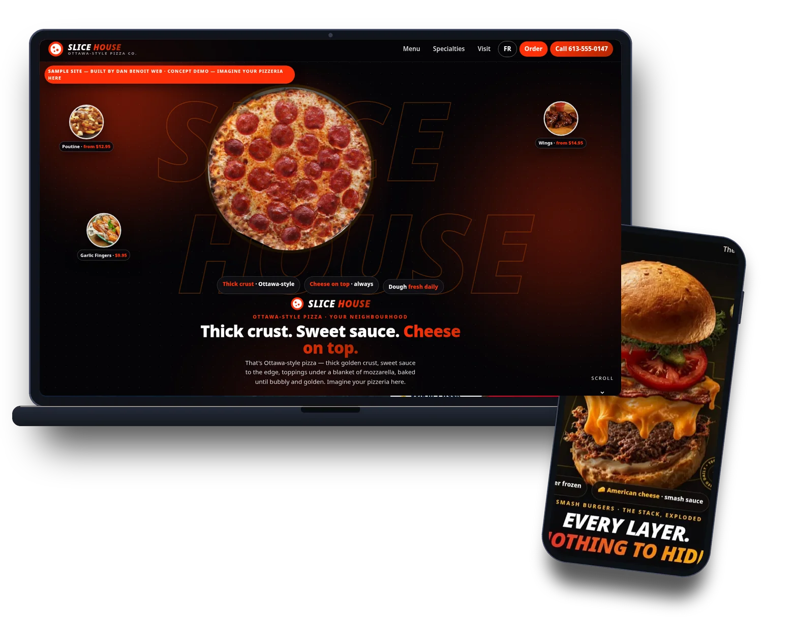

Conception web · Canton de Russell
Conception de sites web à Russell
Pour la conception de sites web à Russell, les entreprises du canton font affaire avec Dan Benoit Web, installé à Embrun, au cœur même du canton de Russell. Votre site est créé sur mesure autour de votre entreprise, en français et en anglais, puis entretenu après sa mise en ligne. Une personne d'ici à appeler, et aucun modèle générique.

Un canton, un concepteur
Quatre communautés, un seul concepteur web d'ici
Le canton de Russell réunit le village de Russell, Embrun, Limoges et Marionville, et il grandit vite le long du corridor de l'autoroute 417. Vos clients sont des voisins, des gens qui font la navette et de nouvelles familles qui arrivent d'Ottawa. Ils cherchent les entreprises d'ici sur leur téléphone, en français et en anglais. Un site construit par quelqu'un du canton comprend ce mélange, parce qu'il le vit lui aussi.
Dan Benoit est installé à Embrun, à quelques minutes de partout dans le canton. Il conçoit et construit chaque site lui-même, photographie les entreprises et les propriétés du coin comme service distinct, et s'occupe de l'hébergement et des mises à jour après le lancement. Pas d'agence, pas de chargé de compte, pas de file de billets. Juste une personne qui connaît votre marché et qui répond elle-même au téléphone.
Ce qu'on offre
Tout ce que votre site a besoin. Rien de superflu.
Bilingue, pour vrai
Une version anglaise complète écrite pour des humains, pas un bouton de traduction. Le canton de Russell parle les deux langues, et votre site devrait faire pareil.
Sur mesure, jamais un modèle
Votre site est conçu autour de votre entreprise, de vos clients et de vos couleurs. Aucune mise en page partagée que des milliers d'autres entreprises utilisent déjà.
Vraie photographie offerte
Vos propres photos, placées et retouchées professionnellement, ou une séance photo de votre entreprise réservée comme service distinct. Jamais des photos d'inconnus prises d'une banque d'images.
Trouvé sur Google
Titres, descriptions, plan du site et profil d'entreprise Google configurés comme il faut, pour que les recherches de Russell, d'Embrun et de Limoges vous trouvent en premier.
Hébergement et mises à jour pris en charge
Hébergement, domaine et sécurité surveillés. Un changement à faire? Envoyez-moi ça et c'est fait pour vous, chaque semaine ou chaque mois.
Connaissez vos chiffres
Un rapport mensuel en langage simple : visiteurs, pages les plus vues, appels et demandes. Juste ce que votre site accomplit, sans jargon.
À explorer aussi
D'ici d'abord, dans les deux langues
Conception de sites web à Embrun
Dan est installé à Embrun, dans le canton, et travaille avec des entreprises de tout Prescott-Russell et de l'est d'Ottawa. Voyez ce qu'un concepteur du coin vous offre.
Sites web bilingues
Deux versions complètes de votre site, en français et en anglais, chacune écrite pour ses lecteurs. Voyez comment fonctionne un site vraiment bilingue et pourquoi il gagne ici.
Sites prêts à lancer
Vous préférez ne pas partir d'une page blanche? Des designs complets sont déjà construits et attendent votre nom, vos photos et vos services.
Questions
Répondues franchement.
Travaillez-vous avec les entreprises de tout le canton de Russell?
Oui. Dan Benoit Web est installé à Embrun, dans le canton de Russell, et crée des sites pour les entreprises du village de Russell, d'Embrun, de Limoges et de Marionville, ainsi que pour le reste de Prescott-Russell et l'est d'Ottawa. Si vos clients sont ici, votre concepteur web l'est aussi.
Combien de temps prendra la création de mon site?
La plupart des sites sont en ligne de 10 à 14 jours après notre premier appel, une fois votre contenu et vos commentaires reçus. Vous examinez un lien d'aperçu privé avant la mise en ligne, et si on attend du matériel de votre côté, le lancement se déplace avec vous au lieu d'être précipité.
Mon site apparaîtra-t-il quand les gens des environs cherchent?
C'est le plan dès le premier jour. Vos pages reçoivent des titres et des descriptions soignés, un plan du site et des coordonnées locales cohérentes, et votre profil d'entreprise Google reçoit aussi de l'attention. Quand quelqu'un dans le canton cherche ce que vous faites, votre site est construit pour être la réponse locale.
Pouvez-vous photographier mon entreprise pour le site?
Oui. Dan est photographe professionnel, et une séance photo de votre entreprise, de votre équipe ou de votre travail est offerte comme service distinct, en complément du site web. Si vous avez déjà de bonnes photos, elles peuvent être placées et retouchées professionnellement. Votre site montre votre vraie entreprise, jamais des photos d'inconnus tirées d'une banque d'images.
Qu'arrive-t-il une fois le site en ligne?
L'hébergement, la sécurité et les sauvegardes sont pris en charge pour vous. Quand vous avez un changement à faire, vous l'envoyez et il est fait, et un rapport mensuel en langage simple vous montre les visiteurs, les appels et les demandes. Le domaine et le site sont enregistrés à votre nom et vous appartiennent.